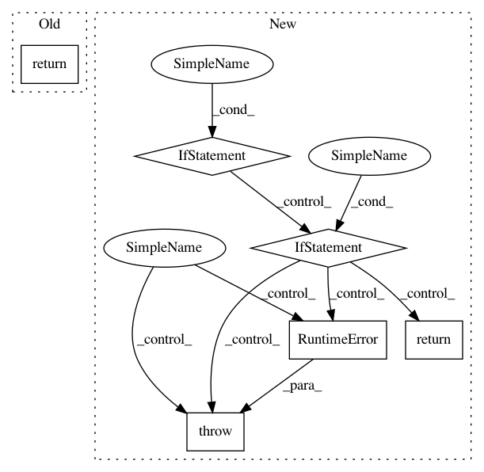

d165905d0ba24cfba414b8e0c20fa8d7c8ab6a6e,nni/retiarii/operation.py,PyTorchOperation,to_forward_code,#PyTorchOperation#Any#Any#Any#,107
Before Change
elif self.type == "aten::size":
return f"{output} = {inputs[0]}.size({inputs[1]})"
elif self.type == "aten::view":
return f"{output} = {inputs[0]}.view({inputs[1]})"
else:
raise RuntimeError(f"unsupported operation type: {self.type} ? {self._to_class_name()}")
class TensorFlowOperation(Operation):
After Change
return f"{output} = [{", ".join(inputs)}]"
elif self.type == "aten::mean":
return f"{output} = torch.mean({inputs[0]}, {", ".join(inputs[1:-1])}, out={inputs[-1]})"
elif self.type == "aten::__getitem__":
assert len(inputs) == 2
return f"{output} = {inputs[0]}[{inputs[1]}]"
elif self.type == "aten::append":
assert len(inputs) == 2
return f"_, {output} = {inputs[0]}.append({inputs[1]}), {inputs[0]}"
elif self.type == "aten::cat":
assert len(inputs) == 2
return f"{output} = torch.cat({inputs[0]}, dim={inputs[1]})"
elif self.type == "aten::add":
assert len(inputs) == 2
return f"{output} = {inputs[0]} + {inputs[1]}"
elif self.type == Type.MergedSlice:
assert (len(inputs) - 1) % 4 == 0
slices = []
dim = int((len(inputs) - 1) / 4)
for i in range(dim):
slices.append(f"{inputs[i*4+2]}:{inputs[i*4+3]}:{inputs[i*4+4]}")
slice_str = ",".join(slices)
return f"{output} = {inputs[0]}[{slice_str}]"
elif self.type == "aten::size":
assert len(inputs) == 2
return f"{output} = {inputs[0]}.size({inputs[1]})"
elif self.type == "aten::view":
assert len(inputs) == 2
return f"{output} = {inputs[0]}.view({inputs[1]})"
elif self.type == "aten::slice":
raise RuntimeError("not supposed to have aten::slice operation")
else:
raise RuntimeError(f"unsupported operation type: {self.type} ? {self._to_class_name()}")
class TensorFlowOperation(Operation):
In pattern: SUPERPATTERN
Frequency: 3
Non-data size: 6
Instances
Project Name: microsoft/nni
Commit Name: d165905d0ba24cfba414b8e0c20fa8d7c8ab6a6e
Time: 2020-12-10
Author: Quanlu.Zhang@microsoft.com
File Name: nni/retiarii/operation.py
Class Name: PyTorchOperation
Method Name: to_forward_code
Project Name: deepmipt/DeepPavlov
Commit Name: c3a9468a86a0abdf78c9a8d55a0147b0a61fb16b
Time: 2018-02-05
Author: arkhipov@yahoo.com
File Name: deeppavlov/models/ner/ner.py
Class Name: NER
Method Name: infer
Project Name: streamlit/streamlit
Commit Name: c4d653ee7275f364b82d539bc58a9793248374eb
Time: 2019-06-05
Author: tconkling@gmail.com
File Name: lib/streamlit/ScriptRunner.py
Class Name: ScriptRunner
Method Name: maybe_handle_execution_control_request